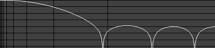
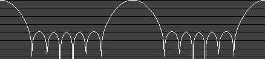

Click here to go to the applet.
This java applet is a demonstration of
digital filters. You should
hear a noise waveform when the applet starts up. If you get a message
"Need java 2 for sound", then you should get the
Java plug-in.
The applet starts up with a low-pass filter. It shows the frequency
response of the filter, the spectrum of the filtered waveform being
played, the waveform itself, and the impulse response of the filter.
Click on the response curve to change the cutoff frequency.
The freqency response graph shows the filter response (shown
vertically, in dB, with lines at 10 dB intervals) versus the frequency
(shown horizontally, with vertical lines marking off octaves). The
spectrum graph shows the spectrum of the sound output.
The Input popup menu allows you to select an input waveform.
The choices are:
- Noise
- Sine Wave - select the frequency by clicking on the spectrum.
- Sawtooth Wave
- Triangle Wave
- Square Wave
- Periodic Noise - select the frequency by clicking on the spectrum.
- Sweep - a sine wave that sweeps across the frequency spectrum at
an adjustable rate.
- Impulses
- Various mp3 files (you can add your own by downloading the applet
and then editing the index.html file)
The Filter popup menu allows you to select a filter. See
this site for technical
details about the filter types.
The choices are:
- FIR Low-pass - filters out high frequencies (everything below the
cutoff frequency, which is adjustable by clicking on the response graph
with the mouse).
- FIR High-pass - filters out low frequencies.
- FIR Band-pass - filters out everything except a range of frequencies. Use
the Center Frequency and Passband Width sliders to
adjust the range.
- FIR Band-stop - filters out a range of frequencies.
Here are some adjustable parameters that affect the quality of the
FIR filters: the number of points,
which you can adjust with the Order slider (more points is
better); and the window,
which you select with the Window popup. An FIR filter is
defined by its impulse response, which you can view near the bottom
of the window. To view the window function, select FIR Low-pass,
set the cutoff frequency near zero and look at the impulse response.
- Custom FIR - draw on the frequency response graph to specify your
own filter. The actual response, shown in red, is affected by the
Order slider and Window popup.
- None - no filtering
- Butterworth Low-pass - a flat filter that filters out high frequencies
- Butterworth High-pass - a flat filter that filters out low frequencies
- Butterworth Band-pass - a flat filter that filters out frequencies
outside of a certain band
- Butterworth Band-stop - a flat filter that filters out frequencies
inside of a certain band
- Chebyshev Low-pass - a low-pass filter with an adjustable amount
of ripple in the passband
- Chebyshev High-pass, Band-pass, Band-stop
- Inv Cheby Low-pass - inverse Chebyshev (also known as Chebyshev
type II), a low-pass filter with a flat passband, but an adjustable amount
of ripple in the stopband
- Inv Cheby High-pass, Band-pass, Band-stop
- Elliptic Low-pass -
(also known as Cauer) a low-pass filter with an adjustable amount
of ripple in the passband and stopband. Adjusting the Transition
Band Width will change the stopband attenuation.
- Elliptic High-pass, Band-pass, Band-stop
- Comb (+) - this filter (used on noise) sounds like someone blowing
into a tube.
- Comb (-) - this is a tube with one end covered.
- Delay - an echo filter (the same as a comb filter, but with longer delays)
- Plucked-String Filter - when the Input popup is set to
"Impulses", this sounds like a string being plucked.
- Inverse Comb
- Reson - resonates at one frequency
- Reson w/ Zeros - a reson filter with zeros added at 0 and half the
sampling rate
- Notch - filters out a narrow range of frequencies
- Moving Average - a simple FIR attempt at a low-pass filter. This filter
(when used on noise) reminds me of an Atari 2600.
- Triangle
- Allpass - passes all frequencies equally, but with different phase delay.
Use the Phase Response item in the View menu to view
the phase response. For low frequencies, this filter acts as a
fractional delay (a delay of less than one sample).
- Gaussian - the impulse response and
frequency response are both gaussian-shaped
- Random
- Custom IIR - drag the poles and zeros around to change the filter.
The Sampling Rate popup allows you to view or change the
sampling rate. You can't change the rate if the input is an MP3.
The View menu allows you to turn on or off the various views.
The Log Frequency Scale item which shows the
frequency response using a logarithmic plot instead of linear.
The Show Entire Waveform item will compress the waveform
segments horizontally so that each one fits in the window; this way, all of the waveform
will be displayed, but the window usually won't be wide enough to show
each sample separately. The Ferris Plot item
will display a
Ferris Plot
of the transfer function.
When displaying the frequency response, the applet only shows the
portion of the spectrum from 0 to the Nyquist
frequency (π). The rest of the response up to 2π is just a mirror image of this,
and then the response
repeats every 2π. For example, here is a frequency response as
displayed in the applet (up to π):

Here is the response up to 4π:

Good books about digital filters:
Click here to go to the applet.


java@falstad.com